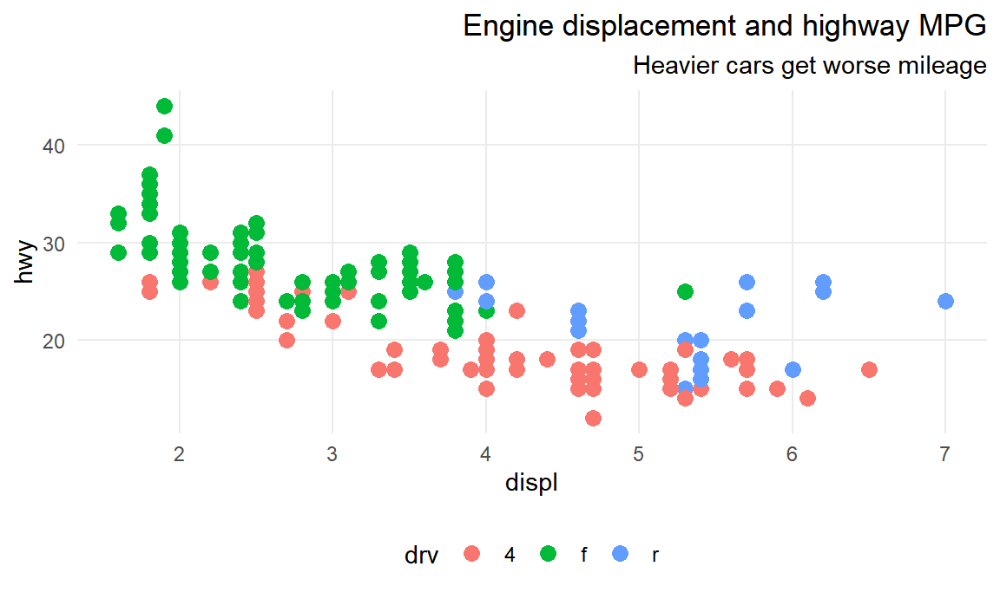
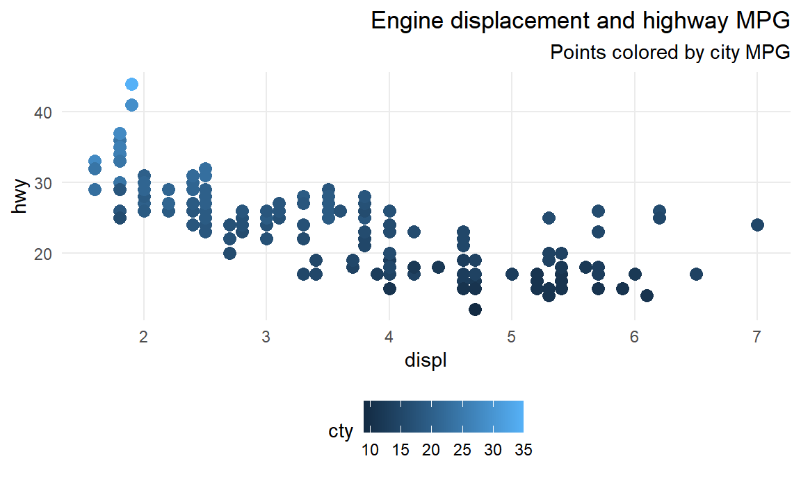
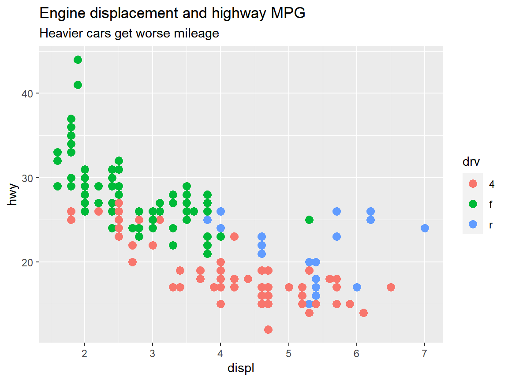

Themes
Lesson for Monday, September 30, 2024–Friday, October 4, 2024
Complete ggplot themes
There are many built-in complete themes that have a good combination of all the different theme() options already set for you. By default, ggplot uses theme_gray() (also spelled theme_grey() for UK English; because the first developer of ggplot (Hadley Wickham) is from New Zealand, British spelling works throughout (e.g. you can use colour instead of color))
Add theme_minimal() to this plot:
Hopefully that was easy!
If you look at the documentation for the different theme functions, you’ll notice that there are a few optional arguments, like base_size and base_family. The base_size argument changes the base font size for the text in the plot, and it is 11 by default. Changing it to something like 20 will not make all the text in the plot be sized at 20—functions like theme_minimal() set the size of plot elements based on the base_size. For instance, in theme_minimal(), the plot title is set to be 120% of base_size, while the caption is 80%. Changing base_size will resize all the different elements accordingly.
Modify this plot to use theme_minimal() with a base size of 16:
Hopefully that was also fairly straightforward!
Modifying plot elements with theme()
Using a complete theme like theme_minimal() or theme_bw() is a great starting point for getting a nice, clean, well designed plot. You’ll often need to make adjustments to smaller, more specific parts of the plot though. To do this, you can use the theme() function.
theme() is a massive function and has perhaps the most possible arguments of any function in R. It is impossible to remember everything it can possibly do. Fortunately its documentation is incredible. Run ?theme in your R console to see the help page, or go to this page online.
Deal with general plot elements
A few arguments to theme() don’t use any special function—you can just specify settings with text like "bottom" or "right"
Look at the documentation for theme() online. Make this plot’s legend appear on the bottom instead of the left.
Disable elements completely with element_blank()
Any plot element can be disabled by using element_blank(). For instance, if you want to remove the axis ticks, you can use theme(axis.ticks = element_blank()).
Look at the documentation for theme() online. Disable the panel grid in this plot.
You can also target more specific plot elements. You can specify something like axis.text, which applies to all axis text, or you can use axis.text.y to only target the text on the y-axis.
Look at the documentation for theme() online. Make the following changes to this plot:
- Disable the major panel grid for the x-axis
- Disable the minor panel grid for the x-axis
- Disable the minor panel grid for the y-axis.
You should only have three horizontal lines for the grid.
Almost every other plot element fits into one of three categories: a rectangle, a line, or text. Changing the settings on these elements requires specific functions that correspond to these categories.
Deal with borders and backgrounds with element_rect()
Things like the plot background or the panel background or the legend background are rectangles and can be manipulated with element_rect(). If you want the legend box to be yellow with a thin black border, you would use theme(legend.box.background = element_rect(fill = "yellow", color = "black", linewidth = 1).
Look at the documentation for theme() and the documentation for element() online. Make the following changes to this plot:
- Fill the plot background with #F2D8CE
- Fill the panel background with #608BA6, and make the border #184759 with linewidth = 5
This will be a fairly ugly plot.
Deal with lines with element_line()
Things like the panel grid, tick marks, and axis lines are all lines and can be manipulated with element_line(). If you want the x-axis line to be a dotted orange like, you would use theme(axis.line.x = element_line(color = "orange", linetype = "dotted").
Look at the documentation for theme() and the documentation for element() online. Make the following changes to this plot:
- Make the major panel gridlines blue and dashed with linewidth = 1
This will also be a fairly ugly plot.
Deal with text with element_text()
Finally, anything with text can be manipulated with element_text(), and you can specify all sorts of things, including font family (family), font weight (face), color (color), horizontal justification (hjust), angle (angle), and a bunch of other options. If you want the x-axis text to be italicized and rotated at a 45º angle, you would use theme(axis.text.x = element_text(face = "italic", angle = 45)).
Look at the documentation for theme() and the documentation for element() online. Make the following changes to this plot:
- Make the y-axis text italic
- Make the plot title right aligned, bold, and colored with #8C7811
- Make the plot subtitle right aligned
Important note about ordering
Things like theme_grey() or theme_minimal() are really just collections of changes to theme(), so the order is important when using a complete theme. If you do something like this to turn off the gridlines in the plot panel:
ggplot(...) +
geom_point(...) +
theme(panel.grid = element_blank()) +
theme_bw()…you’ll still have panel gridlines! That’s because theme_bw() turns them on, and you typed it after you turned it off. If you want to use both theme_bw() and remove the gridlines, you need to make sure any theme adjustments come after theme_bw():
ggplot(...) +
geom_point(...) +
theme_bw() +
theme(panel.grid = element_blank())Fonts
You can use theme() to change the fonts as well, though sometimes it’s a little tricky to get R to see the fonts on your computer—especially if you use Windows. This detailed blog post explains how to work with custom fonts in ggplot and shows how to get it set up on Windows. It should Just Work™ on macOS.
In short, as long as you load the fonts correctly, you can specify different fonts either in a complete theme like theme_minimal(base_family = "Comic Sans MS") or in theme() like theme(plot.title = element_text(family = "Papyrus")).
Reusing themes
If you want to repeat specific theme settings throughout a document, you can save yourself a ton of typing by storing the results of theme() to an object and reusing it. For instance, suppose you want your plots to be based on theme_minimal, have right aligned title and subtitle text, have the legend at the bottom, and have no minor gridlines. You can save all of that into an object named my_neato_theme or something, and then reuse it:
my_neato_theme <- theme_minimal() +
theme(plot.title = element_text(hjust = 1),
plot.subtitle = element_text(hjust = 1),
legend.position = "bottom",
panel.grid.minor = element_blank())
# Make one plot
ggplot(data = mpg,
mapping = aes(x = displ, y = hwy, color = drv)) +
geom_point(size = 3) +
labs(title = "Engine displacement and highway MPG",
subtitle = "Heavier cars get worse mileage") +
my_neato_theme
# Make another plot
ggplot(data = mpg,
mapping = aes(x = displ, y = hwy, color = cty)) +
geom_point(size = 3) +
labs(title = "Engine displacement and highway MPG",
subtitle = "Points colored by city MPG") +
my_neato_theme
Saving plots
So far, all your plots have ended up either in RStudio or in a knitted HTML, Word, or PDF document. But what if you want to save just the plot to your computer so you can send it out to the world?! You could take a screenshot, but that won’t provide the highest resolution, and that will only save the plot as a bitmap-based PNG, not an infinitely resizable vector-based PDF!
Fortunately it’s pretty easy to save a plot using the special ggsave() function. You can specify whatever dimensions you want and whatever file type you want and save the standalone plot to your computer. You should look at the documentation for ggsave() for complete details of all the different options and arguments it can take. Typically, you do something like this.
First create a plot and store it as an object. We haven’t done that yet in this lesson—so far we’ve just run ggplot() and seen the output immediately. If you save the output of ggplot() to an object, you actually won’t see anything until you run the name of the object.
a_cool_plot <- ggplot(data = mpg,
mapping = aes(x = displ, y = hwy, color = drv)) +
geom_point(size = 3) +
labs(title = "Engine displacement and highway MPG",
subtitle = "Heavier cars get worse mileage")
# Make sure you run this so you can see the plot
a_cool_plot
Next you can feed your saved plot to ggsave() to save it. It will automatically determine how to save it based on the filename you provide. If you tell it to be something.png, R will make a PNG; if you tell it to be something.pdf, R will make a PDF, and so on. Common types are PDF, PNG, JPEG (ew though), SVG, TIFF, and others.
You can also save the plot as multiple files. I typically make PNG and PDF versions of any plots I export like so:
ggsave(filename = "a_cool_plot.pdf", plot = a_cool_plot,
width = 6, height = 4.5, units = "in")
ggsave(filename = "a_cool_plot.png", plot = a_cool_plot,
width = 6, height = 4.5, units = "in")From a file management perspective, it often makes sense to store all your output in a separate folder in your project, like output or figures or something. If you want to put saved images in a subfolder, include the name in the file name:
ggsave(filename = "figures/a_cool_plot.png", plot = a_cool_plot,
width = 6, height = 4.5, units = "in")And finally, if you’re using custom fonts, you need to add one bit of wizardry to get the fonts to embed correctly in PDFs. This is something you just have to memorize or copy and paste a lot—if you want to know the full details, see this blog post. In short, R’s default PDF writer doesn’t know how to embed fonts and will panic if you make it try. R can use a different PDF-writing engine named Cairo that embeds fonts just fine, though, so you need to tell ggsave() to use it:
ggsave(filename = "figures/a_cool_plot.pdf", plot = a_cool_plot,
width = 6, height = 4.5, units = "in", device = cairo_pdf)